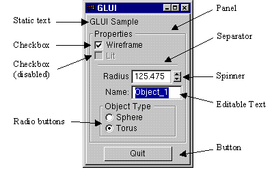
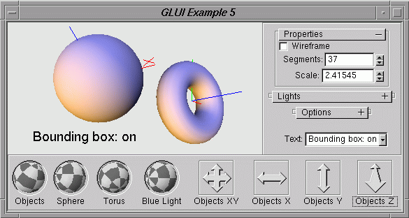

Version 2.2
Written by Paul Rademacher
Maintained by Nigel Stewart
Homepage
Sourceforge:
Summary
News
Forums
Bugs
CVS
Files
Mirrors
[at]
|
|
GLUI Homepage Sourceforge: Summary News Forums Bugs CVS Files Mirrors [at] |
March 2005
GLUI website migration to SourceForge.
Some new features are being merged into CVS.
October 2003
GLUI is being migrated to SourceForge.
Source code is now available via CVS.
Help,
developer,
and
open
discussion forums have been established.
Bug Tracking
is also available.
25th November 2002
Version 2.2 is available.
This is an update for gcc 3.2.
There are no feature enhancements or incompatibilities with 2.1.
Download GLUI 2.2
GLUI is a GLUT-based C++ user interface library which provides controls such as buttons, checkboxes, radio buttons, and spinners to OpenGL applications. It is window-system independent, relying on GLUT to handle all system-dependent issues, such as window and mouse management.
Features of the GLUI User Interface Library include:
Here's an example GLUI window, showing the different controls. This window is rendered entirely in OpenGL. It therefore looks the same on PCs, Macs, SGIs, and other Unixes, using either SGI's implementation of OpenGL, Microsoft's, or Mesa's.

GLUI version 2 includes the following new features and controls:
Here is a screenshot (from Windows) showing all the GLUI version 2.0 controls:

And another screenshot (from X-Windows/Mwm), showing the new features, including GLUI subwindows docked inside the main graphics window.

Version 2.2
Files hosted by SourceForge
Versions previous to GLUI 2.2 are available.
GLUI is licensed under LGPL.